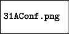

Next: Torque Up: Maui Previous: Nodos Contents
La configuración de Maui define varios parámetros. Desde la frecuencia con la que se realiza el procesamiento de los trabajos en Torque a la política de despacho que se va a utilizar.

Maui realiza una despachamiento de trabajos utilizando una política de despacho predeterminada, pero esta política puede ajustarse para lograr un máximo despempeño del cluster. Estas configuraciones avanzadas se encuentran detalladas en http://www.clusterresources.com/products/maui/docs/.